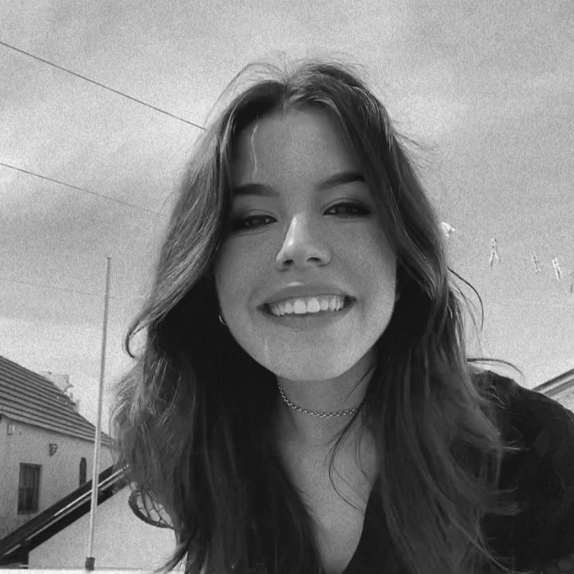

Carolina Lemos
Olá! Sou a Carolina
Aqui encontra-se o meu portefólio digital.
Data de nascimento: 03 março 2002
Naturalidade: Aveiro
Nacionalidade: Portuguesa
Contacto: carolina.lemos@ua.pt
Completou o primeiro ano da licenciatura de Design na Universidade de Aveiro e frenquenta atualmente o segundo ano da mesma. Completou o Curso Secundário Artes Visuais na Escola Secundária José Estevão e simultâneamente o Curso Artístico de Música no Conservatório de Música de Aveiro Calouste Gulbenkian.
No âmbito do ensiono de musica no conservatorio, participou em 19 cursos intensivos, diversas masterclasses, concursos e orquestras relativos a guitarra clássica e em concertos relativos a edições do Festival Guitarras Mágicas. Relativamente às artes visuais teve trabalho exposto na Fundação Eng. António Pascoal no âmbito do curso secundário de Artes. Por fim, esteve nos escuteiros por 11 nos quais realizou diversos projetos de voluntariado.
A lingua Portuguesa é a sua língua materna, obteve formação de nível CAE Cambrigde em língua Inglesa, que permite fluência na fala, escrita e compreensão auditiva, e teve ainda o Ensino básico de Francês que permite leitura.
Apresenta interesse em Desenho Visual, Design Gráfico e Design.